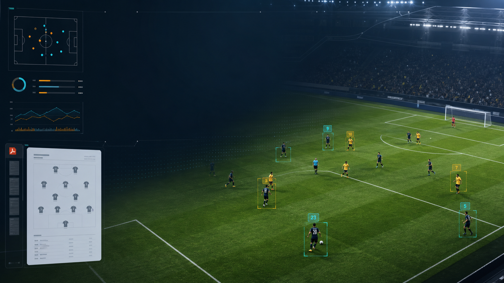

Upload tài liệu trận đấu
Người dùng tải PDF đội hình và video vào cùng một phiên phân tích để backend xử lý tập trung.

AI Player Detection
MatchVision AI gom PDF đội hình, video trận đấu và mô hình nhận diện vào một luồng làm việc rõ ràng, giúp đội phân tích theo dõi cầu thủ, mapping số áo và xuất kết quả nhanh hơn.
Product features
Thiết kế theo đúng luồng của một hệ thống AI: nạp dữ liệu, chạy inference, kiểm tra kết quả và quản trị vận hành.
Người dùng tải PDF đội hình và video vào cùng một phiên phân tích để backend xử lý tập trung.
Chuẩn bị sẵn màn hình cho việc parse số áo, tên cầu thủ, vị trí và đội bóng từ tài liệu lineup.
Mô phỏng bounding box, confidence và mapping kết quả AI sang hồ sơ cầu thủ có trong database.
Admin theo dõi user, trận đấu, file upload, phiên inference, model version và trạng thái dịch vụ.
Workflow
Architecture ready
Các màn hình public, user workspace và admin console được tổ chức riêng, phù hợp để bạn gắn FastAPI, database, Docker worker và model AI ở bước tiếp theo.
Role-based UI
Upload tài liệu/video, theo dõi job phân tích, xem kết quả mapping và chỉnh thông tin tài khoản.
Mở user workspaceQuản lý người dùng, trận đấu, file upload, model version và các inference job trong hệ thống.
Mở admin console